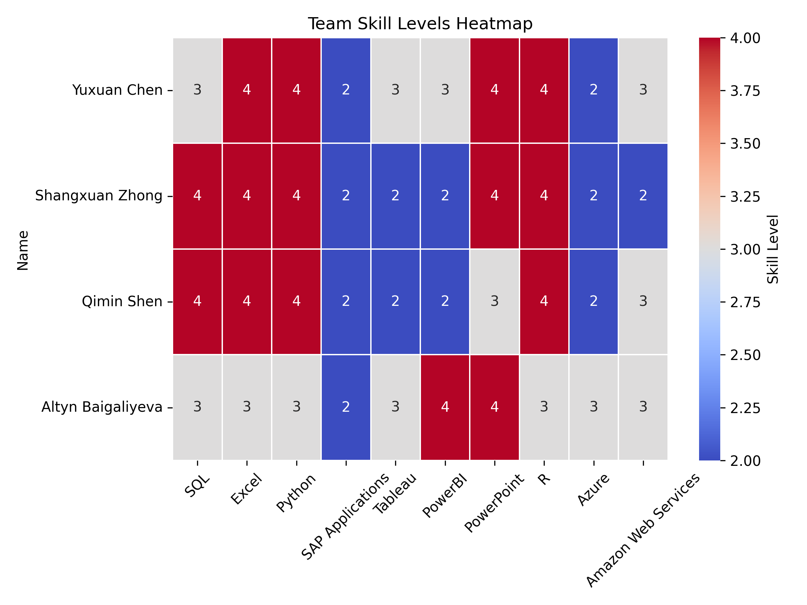

import pandas as pdimport plotly.express as pximport plotly.io as piopio.renderers.default ="vscode"from pyspark.sql import SparkSessionfrom pyspark.sql.functions import split, explode, col, regexp_replace, transform, isnanspark = SparkSession.builder.appName("LightcastCleanedData").getOrCreate()# reload cleaned datadf_cleaned = spark.read.option("header", "true").option("inferSchema", "true").option("multiLine","true").csv("data/lightcast_cleaned.csv")# show datasetdf_cleaned.show()
1 Creating a team-based skills data framework
We take a column of software skill names from the cleaned dataset, splits each entry, cleans up the text, and counts how often each skill appears. Then, we grabs the top 30 most frequent skills, and puts them into a tidy table using pandas to make it easier to view.
Code
from collections import Counterimport pandas as pd# 1. Extracting data with .collect()skills_rows = df_cleaned.select("SOFTWARE_SKILLS_NAME").dropna().collect()# 2. Split each line of string into a list of skills and expand the statisticsall_skills = []for row in skills_rows: skills = row["SOFTWARE_SKILLS_NAME"] ifisinstance(skills, str): skill_list = [s.strip() for s in skills.split(",")] # Split and remove spaces all_skills.extend(skill_list)# 3. Counting word frequencyskill_counts = Counter(all_skills)top_skills = skill_counts.most_common(30) # 4. Change to dataframe and showdf_skill_counts = pd.DataFrame(top_skills, columns=["Skill", "Frequency"])#print(df_skill_counts)
We build a table showing the skill levels of our team members across various tools like SQL, Excel, Python, and others. Then we create a heatmap to visually highlight each person’s strengths and weaknesses, making it easy to compare skill levels across the team.
Code
import pandas as pdimport seaborn as snsimport matplotlib.pyplot as plt# 1. Construct team skill level dataskills_data = {"Name": ["Yuxuan Chen", "Shangxuan Zhong", "Qimin Shen", "Altyn Baigaliyeva"],"SQL": [3, 4, 4, 3],"Excel": [4, 4, 4, 3],"Python": [4, 4, 4, 3],"SAP Applications": [2, 2, 2, 2],"Tableau": [3, 2, 2, 3],"PowerBI": [3, 2, 2, 4],"PowerPoint": [4, 4, 3, 4],"R": [4, 4, 4, 3],"Azure": [2, 2, 2, 3],"Amazon Web Services": [3, 2, 3, 3]}# 2. Create dataframe and set Name as indexdf_skills = pd.DataFrame(skills_data)df_skills.set_index("Name", inplace=True)# 3. Demonstrate the skill level chart#print("Team Skill Rating Scale:")#display(df_skills) # 4. Visualize the skills gap by heat mapplt.figure(figsize=(8, 6))sns.heatmap(df_skills, annot=True, cmap="coolwarm", linewidths=0.5, cbar_kws={'label': 'Skill Level'})plt.title("Team Skill Levels Heatmap")plt.xticks(rotation=45) plt.yticks(rotation=0)plt.tight_layout()plt.savefig("images/Skill_Level.png", dpi=300)plt.show()
 缺少解释 这个我就先不解释了，等大家数据更新完重新画了再解释，我把我数据改了
2 Compare team skills to industry requirements
We add a new column EDU_MATCH to the dataset to check if each person’s actual education level matches the minimum education requirement. If they match, it labels the row as “Match”; otherwise, it marks it as “Mismatch.” This makes it easy to see who meets the education criteria and who doesn’t.
Code
from pyspark.sql.functions import col, when# Create a new column EDU_MATCH, mark it as a match or notdf_compare = df_cleaned.withColumn("EDU_MATCH", when(col("MIN_EDULEVELS") == col("EDUCATION_LEVELS"), "Match").otherwise("Mismatch"))#df_compare.select("MIN_EDULEVELS", "EDUCATION_LEVELS", "EDU_MATCH").show(truncate=False)# 统计不匹配的行数#unmatched_count = df_cleaned.filter(col("MIN_EDULEVELS") != col("EDUCATION_LEVELS")).count()#print(f"Not Match：{unmatched_count}")# 说明EDUCATION_LEVELS和MIN_EDULEVELS一样，但是这个检验的代码还是留着吧
Then we create a reference table that links each unique minimum education level required for a job to a corresponding score. It assigns higher scores to higher education levels, for example, a Ph.D. gets a 5, a Master’s a 4, and so on, down to 0 for jobs that list no education requirement. And we think this scoring helps quantify and compare job expectations based on the level of education required.
Code
from pyspark.sql.functions import when, lit, col, trim# Score tablejob_expectation = df_cleaned.select( col("MIN_EDULEVELS").alias("EDU_LEVEL"), col("MIN_EDULEVELS_NAME").alias("EDU_LEVELS_NAME")).distinct().orderBy(col("EDU_LEVEL").asc())job_expectation = job_expectation.withColumn("SCORE", when(col("EDU_LEVEL") ==4, lit(5)) # Ph.D. or professional degree .when(col("EDU_LEVEL") ==3, lit(4)) # Master's degree .when(col("EDU_LEVEL") ==2, lit(3)) # Bachelor's degree .when(col("EDU_LEVEL") ==1, lit(2)) # Associate degree .when(col("EDU_LEVEL") ==0, lit(1)) # High school or GED .when(col("EDU_LEVEL") ==99, lit(0)) # No Education Listed)job_expectation.show(truncate=False)
Job Expectation
We analyze how often each software skill appears in job listings, categorized by the required education level (which we previously converted into scores). First, we join the education score to each job, split the combined skill strings into individual skills, and count how frequently each skill appears at each education score level. Second, we reshape the data so that each skill shows the number of times it appears across all score levels. Finally, we identify the most common score for each skill. If multiple scores tie for the highest count, we will select the lowest one among them—resulting in a “Proficiency_Levels” value that reflects the typical education requirement associated with that skill in the job market.
Code
from pyspark.sql.functions import count, array, struct, sort_array, expr, size, element_at, col, lit, greatest, when# 1. Export the data df_with_score = df_cleaned.join( job_expectation.select("EDU_LEVEL", "SCORE"), df_cleaned["MIN_EDULEVELS"] == job_expectation["EDU_LEVEL"], how="left")df_with_skills = df_with_score.withColumn("Skill", split(col("SOFTWARE_SKILLS_NAME"), ","))df_exploded = df_with_skills.select(explode("Skill").alias("Skill"), col("SCORE"))df_exploded = df_exploded.withColumn("Skill", trim(col("Skill")))# 2. Frequency Statistics by Skill and SCOREskill_score_counts = df_exploded.groupBy("Skill", "SCORE").agg(count("*").alias("count"))# 3 Expand pivot to columnfrom pyspark.sql.functions importsumas _sumskill_score_pivot = skill_score_counts.groupBy("Skill") \ .pivot("SCORE", [5, 4, 3, 2, 1, 0]) \ .agg(_sum("count")) \ .na.fill(0) # 4. Arrays and filters are used to process tied maxima and find the middle scorescore_structs = array( struct(lit(5).alias("score"), col("5").alias("cnt")), struct(lit(4).alias("score"), col("4").alias("cnt")), struct(lit(3).alias("score"), col("3").alias("cnt")), struct(lit(2).alias("score"), col("2").alias("cnt")), struct(lit(1).alias("score"), col("1").alias("cnt")), struct(lit(0).alias("score"), col("0").alias("cnt")))skill_score_labeled = skill_score_pivot.withColumn("score_array", score_structs) \ .withColumn("max_count", greatest(col("5"), col("4"), col("3"), col("2"), col("1"), col("0"))) \ .withColumn("filtered", expr("filter(score_array, x -> x.cnt = max_count)")) \ .withColumn("Proficiency_Levels", expr("aggregate(filtered, -1, (acc, x) -> IF(acc = -1 OR x.score < acc, x.score, acc))"))# Step 5: 显示最终结果#skill_score_labeled.select("Skill", "5", "4", "3", "2", "1", "0", "Proficiency_Levels").orderBy("Proficiency_Levels", ascending=False).show(truncate=False)
Here we focus on a specific set of software skills that are relevant to our analysis. First, we define a list of target skills we’re interested in, such as SQL, Excel, Python, Tableau, and others. Then, we filter our previously processed skill data to only include these selected skills, keeping just the skill names and their associated “Proficiency_Levels”. Finally, we sort the result alphabetically by skill name to make it easier to review and compare.
Code
from pyspark.sql.functions import lit# 1. Define a list of target skillstarget_skills = ["SQL(ProgrammingLanguage)", "MicrosoftExcel", "Python(ProgrammingLanguage)","SAPApplications", "Tableau(BusinessIntelligenceSoftware)","PowerBI", "MicrosoftPowerPoint", "R(ProgrammingLanguage)","MicrosoftAzure", "AmazonWebServices"]# 2. Filter target skills from skill_score_labeledfiltered_skills = skill_score_labeled.filter(col("Skill").isin(target_skills)) \ .select("Skill", "Proficiency_Levels") \ .orderBy("Skill")# 3. Show resultsfiltered_skills.show(truncate=False)
Filtered Skills
Now we are able to evaluate how well our team’s skill levels match up with job market expectations. First, we collect the proficiency scores for a set of target skills from our previous results. Then, we rename the skill labels into a more readable and consistent format for easier comparison. Next, we calculate the skill gap for each team member by subtracting the job-required score from their actual skill level. Here, positive values mean the team exceeds the requirement, while negative values show areas for improvement. Finally, we visualize these gaps using a heatmap, making it easy to spot which skills are strong and which need development across the team.
Code
import pandas as pdimport matplotlib.pyplot as pltimport seaborn as sns# 1. Build a dictionary of required_levels from filtered_skills with collectrows = filtered_skills.collect()# 2. Mapping skill names to a consistent form used by the teamskill_name_map = {"SQL(ProgrammingLanguage)": "SQL","MicrosoftExcel": "Excel","Python(ProgrammingLanguage)": "Python","SAPApplications": "SAP Applications","Tableau(BusinessIntelligenceSoftware)": "Tableau","PowerBI": "PowerBI","MicrosoftPowerPoint": "PowerPoint","R(ProgrammingLanguage)": "R","MicrosoftAzure": "Azure","AmazonWebServices": "Amazon Web Services"}# 3. Construction of required_levelsrequired_levels = { skill_name_map.get(row["Skill"], row["Skill"]): row["Proficiency_Levels"]for row in rows}# 4. Calculation of gaps (team skills - job requirements)df_gap = df_skills.copy()for skill in df_gap.columns: required = required_levels.get(skill, 0) df_gap[skill] = df_gap[skill] - required# 5. Show result with heat mapplt.figure(figsize=(10, 6))sns.heatmap( df_gap, annot=True, cmap=sns.diverging_palette(10, 130, s=90, l=50, as_cmap=True), # red = insufficient, green = exceeding center=0, linewidths=0.5, cbar_kws={'label': 'Skill Surplus (Team - Required)'})plt.title("Team vs Job Skill Requirements (Heatmap)")plt.xticks(rotation=45)plt.yticks(rotation=0)plt.tight_layout()plt.savefig("images/Gaps_Between.png", dpi=300)plt.show()